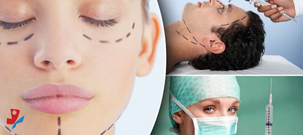

<!DOCTYPE html>
<html lang="en">
<head>
    <meta charset="UTF-8">
    <meta http-equiv="X-UA-Compatible" content="IE=edge">
    <meta name="viewport" content="width=device-width, initial-scale=1.0">
    <title>Plasticsurgery</title>
    <link href="C:\Users\129TX\Desktop\python\hms\css\plasticsurgery.css" rel="stylesheet" type="text/css">
</head>
<body>
    <style>
    html{
        
        background:url('back.jpg') no-repeat center center fixed;
        background-size: cover;
        -webkit-background-size:cover;
        -moz-background-size:cover;
        -o-background-size:cover;
    }
</style>
</body>
</html>
<section class="paras">
    <div class="plasticsurgeryimage">
        

    </div>
    <div class="plasticsurgery">
        <h1>plastic surgery</h1>
        <ul>
       <li><p>department of plastic, reconstructive and burns surgery was establish in july 2015. although in its nascent stage. its already making its presence known-not just nationally but in the international arena also.</p></li>
        <li><p>the department works in collaboration with various other  department such as neurosurgery,cardic surgery,orthopadic surgery etc,the endeavor of this young and enthusiastic team of surgeons isto reduce the morbidity and provide functionality and microsurgicak procedures therby providing an improved quality of life to the patients.</p></li>
        <li><p>it caters to almost all emergncy hand injuries,microvascular reconstructive for complex limb trauma post bum reconstructuion,maxillofacial trauma,oncoplastic reconstruction ,aesthetic brest surgery,oncoplastic breast reconstructiin and other congential anomalies like cleft lip,cleft palate,sydaclyly,camptodacltlt,hypoplastic thumb defomity etc.</p></li>
        <li><p>the teamwork in collaboration with orthopadic surgery to run the hand clinic with department of orthodonatics to run the cleft clinic.with the department of dermatology to run the aesthetic clinic,tith the department of neurosurgery to run the branchial plexus injury clinic the amputation clinic along with PMR.</p></li>
        </ul>    
</div>
    
</section>